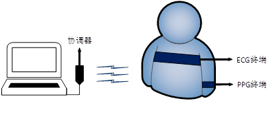
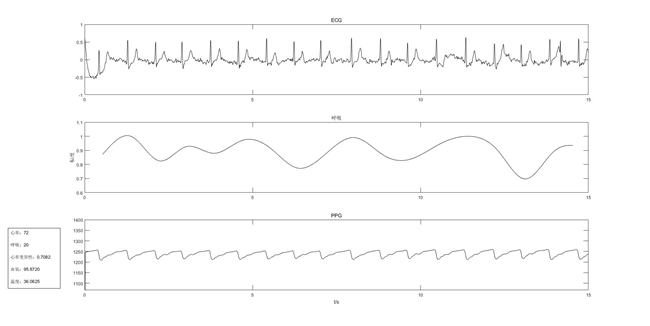
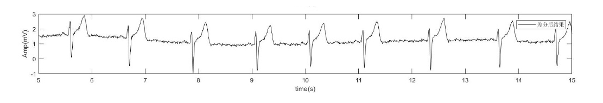

一、多生理参数实时监测平台

我们搭建了具有完备功能的多生理参数采集系统，不影响被测者的日常活动，该系统搭配上位机能够对检测信号进行实时波形显示，计算参数并呈现相应生命体征的测试数值，还能够实现数据的网络共享，该系统具有：
1.无线传输数据
2.完成了呼吸、脉率、体温以及血氧饱和度等生理参数的实时监测
3.体积小、成本低、拓展性强、佩戴方便
测试结果:

心电信号：每一心动周期所产生的电活动变化，通过分析该图可以有效诊断心律失常等疾病
呼吸波:人体呼吸产生的信号，用于监测呼吸困难引起的各种疾病
脉搏波: 脉搏波速度是一项用于检查动脉血管是否正常的一项辅助检查。
二、无线式连续心电前端信号采集系统
基于自主研发的超高阻抗、超低噪声电荷感知芯片，开发了单位置心电检采集原型系统，无需间隔一定距离的两个或多个电极实现心电采集，为将来实现多点无线分立心电采集系统的建立提供了必要的前期技术途径。
该系统与常规医疗心电监测系统相比，具有如下的优势：
1.仅在人体体表单个位置处即可实现心电检测，佩戴方便
2.无线传输数据，且具有适配的上位机、手机App软件和微信小程序，方便使用
3.体积小、功耗低、成本低

前端心电信号传感电极探测面采集的信号，即心电信号。
成果展示